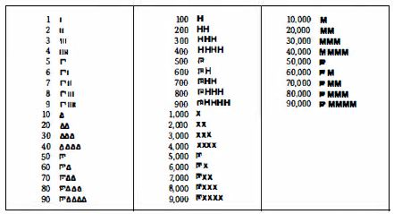
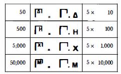

История на цифрите

Гръцки цифри
|
Стр. 375-376 А сега нека посетим............................. принципа на събирането.  Атическата система притежава .................................. принцип на акрофонията. Колкото до знаците, свързани съответно с числата 50, 500, 5 000 и 50 000, очевидно те са съставени от предходните, съобразно принципа на умножението: 
|